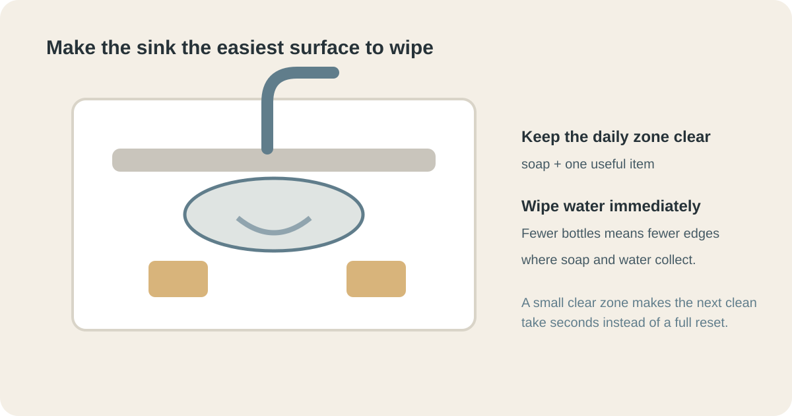

HOME CARE · BATHROOM
How to Make a Small Bathroom Easier to Clean Without Remodeling
If a small bathroom looks dirty again five minutes after you clean it, the problem may not be your cleaning routine. It may be the room setup. This guide shows how to remove the little sources of friction that make a small bathroom harder to keep clean.

Short answer: do not start by buying more storage. First reduce what gets wet, remove unnecessary items from the sink, keep the floor open, give towels enough room to dry and keep your basic cleaning tools within easy reach. The goal is not a spotless showroom. It is a bathroom that takes less effort to reset.
1. Find the surfaces that create the most work
Walk into the bathroom after a normal day and look for the first five things that make you want to clean. It might be toothpaste around the basin, bottles sitting in shower water, hair on the floor, a wet bath mat or a mirror covered in spots.
Do not treat all of those as separate cleaning jobs. Ask what causes each one. If bottles sit in a puddle, the problem is storage and drainage. If toothpaste collects around the sink, the problem may be that the products are packed too tightly around the basin. If the floor collects hair because a laundry basket blocks access, the problem is layout.
This is the key idea for a small bathroom: remove the cause before adding a cleaning task. It is the same principle behind keeping a kitchen counter clear with defined zones; you can see the approach in our kitchen counter guide.
2. Make the sink area a clear working surface

The sink is usually the highest-friction surface because it is used several times a day. A small bathroom does not need every daily product displayed there.
- Keep only daily-use items visible. Toothbrushes, hand soap and perhaps one skincare product may earn counter space.
- Move backups elsewhere. Extra toothpaste, unopened soap and spare bottles are storage items, not countertop items.
- Use one container for small loose items. A tray or drawer organizer is easier to wipe around than many individual objects.
- Leave a wiping lane. You should be able to wipe most of the basin and counter without moving ten things first.
A useful test is simple: can you wipe the entire sink area in about 30 seconds? If not, reduce or contain what is sitting there. The point is not minimalism for its own sake; it is removing the setup step before cleaning.
3. Stop water from becoming tomorrow's cleaning job

In a bathroom, many "cleaning" problems begin as water problems. Water left on glass, taps, the basin edge and shower walls eventually dries, leaving minerals or soap residue behind.
You do not need to dry every surface after every shower. Focus on the places where water regularly sits.
- Squeegee the shower glass if you have glass that develops spots quickly.
- Wipe the faucet base when you notice water collecting around it.
- Spread the shower curtain instead of leaving it bunched up wet.
- Hang towels open so they dry rather than becoming another source of dampness.
If your bathroom already struggles with lingering humidity, fix ventilation before trying to clean away the symptoms. Our bathroom condensation guide explains how to measure humidity and test the fan and replacement airflow.
4. Keep the floor open enough to clean in one pass

A small bathroom floor can become surprisingly difficult to clean when a bin, scale, laundry basket, toilet brush and spare products all occupy different corners. You do not need an empty floor, but you do need a clear path for the mop or vacuum.
- Keep the laundry basket where it does not block the main walking path.
- Use a small bin that can be moved with one hand.
- Store spare toilet paper above or beside the toilet rather than spreading packages across the floor.
- Choose one place for the toilet brush and keep the area around it accessible.
If you cannot reach the wall behind an object, you are likely to postpone cleaning that area. That turns a two-minute job into a buildup problem.
5. Give shower and bath products a dry home
Shampoo bottles do not become a problem because there are bottles. They become a problem when their bottoms sit permanently in water, soap residue or hair.
Before buying a new organizer, check whether your current storage has three properties: it drains, it can be lifted, and you can clean underneath it. A container with no drainage can simply create a larger wet patch.
For a shower, keep the products you actually use in that shower. Store backups elsewhere. If several people share the room, give each person a defined area rather than allowing bottles to spread across every ledge.
The same logic works outside the bathroom. Our entryway storage guide uses zones to make everyday items easier to put away without adding a large piece of furniture.
6. Put the cleaning tools where the mess happens
A cleaning tool that lives in another room is easy to ignore. A small bathroom benefits from a tiny maintenance kit kept nearby: a microfiber cloth, a suitable bathroom cleaner, a small brush for edges and a squeegee if your shower needs one.
Keep chemicals in their original labeled containers and follow their labels. Never mix bleach with vinegar, acids or other cleaners. More product is not automatically better; the correct product used as directed is safer and usually leaves less residue.
The objective is not to clean more often. It is to make a 60-second response possible when you notice a small problem. Wipe toothpaste now instead of creating a hardened ring that needs scrubbing later.
7. Make towels and the bath mat dry properly
Moisture is one of the fastest ways for a clean bathroom to start feeling dirty again. A towel bunched on a hook or a thick bath mat that stays damp can keep the room humid for hours.
Give each towel enough space to spread out. If several towels share one rail, overlap them as little as possible. Wash the bath mat according to its care label and make sure it can dry completely between uses.
If towels repeatedly smell musty, do not simply replace them. Our musty-towel guide shows how to distinguish a drying problem from a washing problem and what to test before buying replacements.
8. Build a five-minute reset instead of a long cleaning session
A small bathroom is easier to maintain when the reset is predictable. Try this order after the busiest part of the day:
- Put products back into their homes.
- Hang towels fully open.
- Remove hair and visible debris from the floor.
- Wipe the sink and faucet.
- Check the shower floor or glass and remove obvious standing water.
Stop there unless something actually needs deeper cleaning. A reset is not the same as a full clean.
If the bathroom still takes too long to clean, look for the task that keeps returning. That repeated task is the best target for a layout change. Do not solve a recurring problem by adding a permanent reminder to your to-do list.
9. What is worth buying — and what is not
Once the room is working, a few inexpensive tools can remove friction. The order matters.
- Worth considering: a small squeegee for shower glass, a washable tray for the sink, a draining shower organizer, a compact laundry basket and a simple humidity meter if dampness is persistent.
- Usually not the first move: decorative storage boxes, large countertop organizers, duplicate cleaning products or furniture that makes the floor harder to reach.
Buy for a problem you can name. "This keeps the shower bottles off the wet ledge" is a good reason. "It might make the bathroom more organized" is not enough.
10. Use this test before you declare the bathroom fixed
Do the following tomorrow, not immediately after cleaning. Use the bathroom normally, then look at it when you are tired and in a hurry.
- Can you clear the sink without deciding where every item belongs?
- Can you reach the floor with your cleaning tool without moving several objects?
- Can towels dry without touching each other?
- Can you deal with a wet shower surface in less than a minute?
- Can you find the basic cleaning tool without opening three cabinets?
If you answered no to one question, change that one thing first. A bathroom becomes easier to maintain through small reductions in friction, not through one dramatic makeover.
Frequently Asked Questions
Why does my small bathroom get dirty so quickly?
Small bathrooms have less spare surface area, so water, soap residue, hair and everyday items become noticeable quickly. The best fix is to reduce what gets wet and make the remaining surfaces easy to reach.
Should I keep bathroom products on the counter?
Keep only what you use every day on the counter. Move backups and occasional products into a drawer, cabinet or small contained basket.
Does a shower squeegee really make a difference?
Yes, if you use it immediately after showering. Removing standing water from glass and smooth walls gives mineral deposits less water to dry from.
How often should a small bathroom be cleaned?
Use small daily resets for wet and messy areas, then do a more complete clean weekly. The exact schedule depends on how many people use the bathroom and how much ventilation it has.
What should I remove first if the bathroom feels cluttered?
Remove duplicates, empty packaging, expired products and items that belong elsewhere. Then create one home for the few products you use every day.
How can I make a bathroom easier to clean without remodeling?
Reduce countertop items, keep the floor clear, improve towel drying, contain small products and keep a few cleaning tools close to the bathroom. These changes reduce cleaning time without changing the room.
Practical takeaway
Do not start by shopping. Start with the surface that keeps getting dirty. Remove what does not need to be there, give the remaining items a defined home, control standing water and make the five-minute reset easy. If a problem keeps returning, change the setup that creates it.
This guide is general home-care information. Follow product labels and manufacturer instructions, especially when using cleaning chemicals or changing bathroom fixtures.
Sources and image credits
Reviewed October 7, 2026. Images used under the Unsplash License.